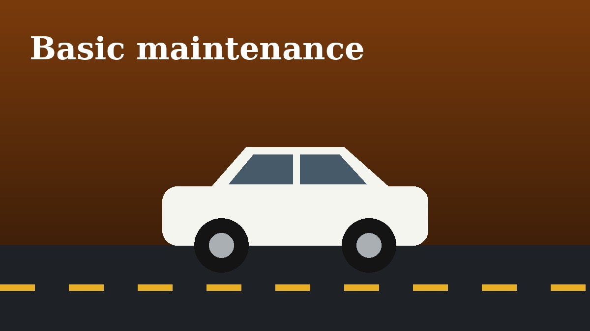

A Beginner's Guide to Basic Car Maintenance

You do not need tools to keep a car healthy. Once a month, check tire pressure with the tires cold and set it to the value on the sticker inside the driver's door.
Check the engine oil with the car parked on level ground. Pull the dipstick, wipe it, reinsert it and read the level. Top up the coolant and washer fluid reservoirs if they sit below the minimum mark.
Finish with lights and wipers. Ask a friend to watch the brake lights while you press the pedal. Replace streaking wiper blades before the rainy season, not during it.